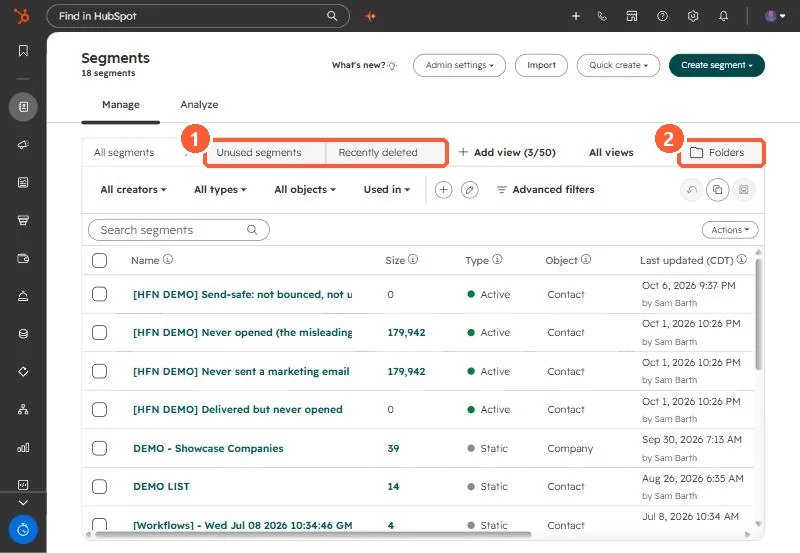

Short answer
CRM, Segments has an Unused segments tab for segments not used or updated in the last two months, a Recently deleted tab to restore from, Folders, and a Used in filter. Delete one or many from the table, and restore from Recently deleted if you got it wrong. Account Cleanup can also delete old unreferenced segments monthly.
1. The index
My demo portal has 18 segments, including the demo ones I made for earlier articles.


2. Before deleting
- Open the segment and check Use in and where it is referenced.
- Static segments used for one-off sends are usually safe to remove after the send.
- Restore from Recently deleted if something breaks.
3. Folders and naming
Put segments in folders by team or purpose and use a consistent prefix, such as the [HFN DEMO] prefix on mine. For automatic monthly cleanup, see Account Cleanup.